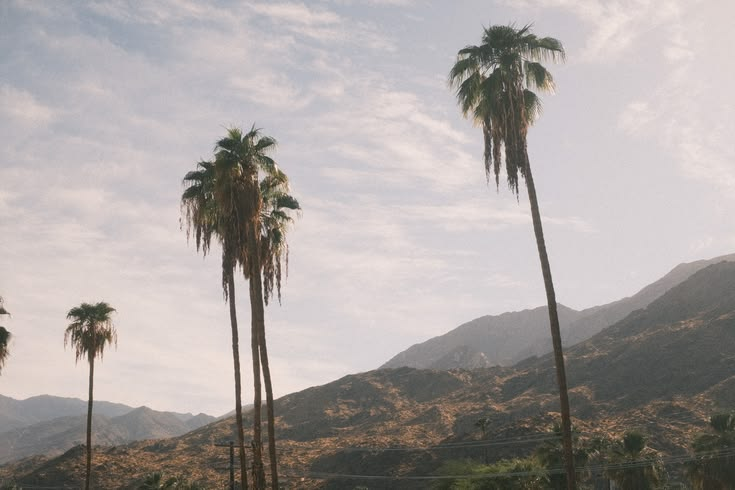

about
voicing the unvoiced.
i work at the intersection of politics, media, and design through my journalism, competitive debate, research, and filmmaking. i think deeply about how stories shape perspectives, how media influences the way we understand the world, and how creative mediums can make abstract ideas more accessible.
i write for infocus news, aera magazine and agora magazine, design for aerosim and halawaat, and lead at the palo alto speech & debate camp and jeanc. i was previously a research assistant for dr. beth van schaack, and i'm currently co-producing and directing in her lens, a documentary about women in journalism and media.
i'm drawn to the spaces where information meets expression, and where thoughtful storytelling can challenge assumptions, amplify overlooked voices, and cultivate meaningful change.
journalism
infocus news
aera magazine
agora magazine
design
aerosim
halawaat
leadership
palo alto speech & debate camp
jeanc
research & film
research assistant, dr. beth van schaack
co-producer & director, in her lens
contactnoorfahadkhann@gmail.com